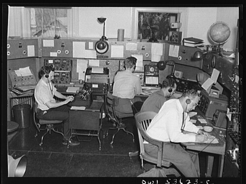

Loading the day's report…
Democracy's Library · Foreign Broadcast Information Service · 1978–1996
FBIS This Day
One day, one Daily Report: what the Foreign Broadcast Information Service heard from the world's radio and press on this date between 1978 and 1996, and why it mattered. A new drop arrives at midnight.
Monitoring · next report in --:--:--
